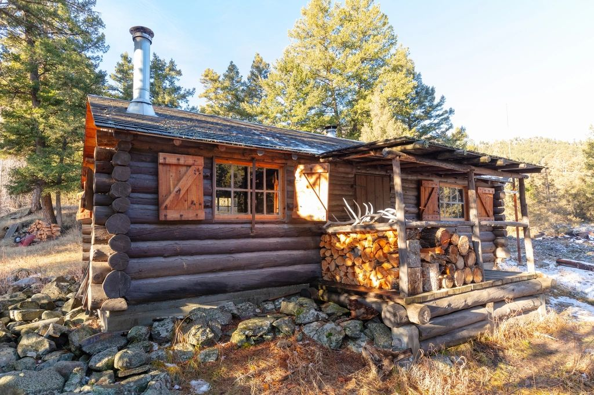
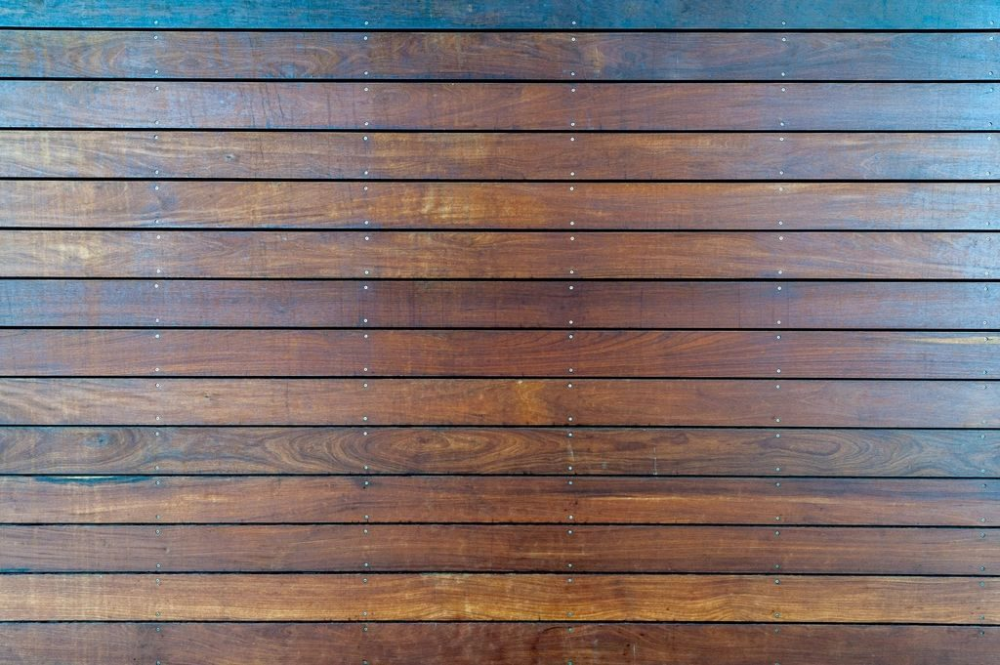
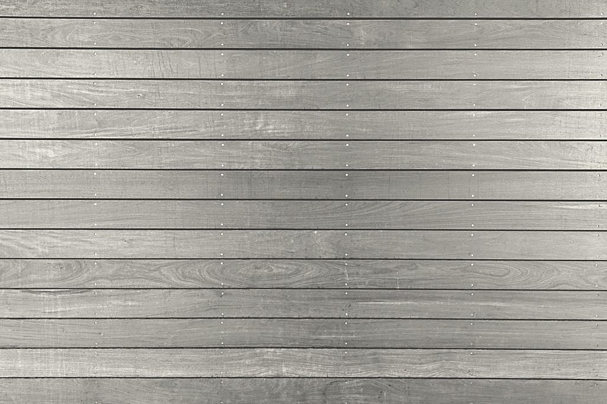

Deck staining & restoration · Knoxville, TN
Knoxville deck staining, done by hand and done right.
We wash, we brighten, we stain. Most decks take two days. A one-man shop with a helper on big jobs, and the owner is on every job.
Send photos, get a price range. No drive-out needed for most decks.

- LicensedTN Home Improvement
#SAMPLE-11111 Sample - Insured$1,000,000 general liability Sample
- Google rating4.9 Sample
- In business5 years Sample
- Written warranty2-yr floors · 4-yr rails
Services
Everything wood, outside the house
Our main job
Deck Staining
Most decks we see around Knoxville aren't ruined. They're gray, a little rough, maybe green on the shady side. Under that is good wood that just needs the right prep and a stain that soaks in.
See how we do it- Deck Cleaning & RestorationGray, green or peeling? That deck can come back.
- Fence StainingFences are vertical, so a good stain lasts longer on them than on a deck floor.
- Log Home & Cabin StainingLogs move, check and drink stain. They need their own plan.
- Pergolas, Porches & GazebosAll the posts, beams and slats that a sprayer misses.
- Maintenance PlansThe cheapest deck to stain is one that never needs stripping.
How it works
Four steps. Usually two days on site.
- 1
Send photos
Snap 3–5 pictures and send them in. One wide shot of the whole deck helps most. You get a price range the same day, most of the time.
- 2
Pick a color
Try colors on a photo of your own deck. We bring real samples to the job so you see it on your wood before we start.
- 3
We wash & prep
Day one: low-pressure wash, strip or brighten as needed, fix popped nails. Then the wood has to dry.
- 4
We stain & seal
Day two: we brush every board and every log. Most decks are two days; cabins take longer, and we'll tell you up front.
Before & after
Gray wood isn't dead wood.
That silver look is just the sun-worn top layer. A proper wash and brightener takes it off. The wood underneath is usually fine, and it takes stain beautifully.
Drag the slider to compare.
How restoration works

Finish options
Three kinds of stain. Here's the honest difference.
Prices shown are sample rates for a deck in good shape; weathered and peeling decks cost more. Read: semi-transparent vs. solid

Questions
What homeowners ask us most
Straight answers, with links to the experts where it matters. More in our Learn section.
How much does deck staining cost in Knoxville?
Nationally, Angi puts a typical job at $550–$1,250, about $850 on average, or roughly $2 to $4 per square foot (Angi, 2026). Your price depends on size, railings, stairs and how much prep the wood needs. Our price calculator gives you a range in about a minute.
How often does a deck need to be restained?
When is the best time of year to stain a deck in Knoxville?
September and October. October is the driest month on average here, and September and October have the fewest rainy days (NOAA normals). Stain needs dry wood and a few dry days.
Semi-transparent or solid stain?
Do you pressure-wash?
Not the way most people mean it. High pressure can strip wood fibers off the surface (USDA FPL). We use cleaners and low pressure, then a brightener.
Can you give me a price from photos?
Yes. That's how most of our estimates start. Upload up to five photos, including one wide shot of the whole deck, and we'll send a price range. We confirm it in person or by video before we start.
Are you licensed?
In Knox County, Tennessee requires a Home Improvement license for residential jobs from $3,000 to $24,999 (TN.gov). Our license and insurance are listed at the bottom of every page.
Do I need to be home?
No. We just need access to the deck, a water spigot, and pets kept inside. We'll text you when we start, when we finish each day, and before we leave.
Ready when you are